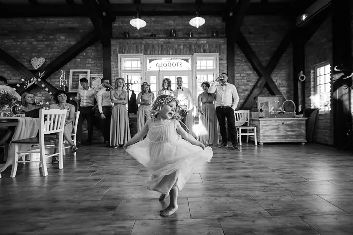

Pohlednice č. 1
Svatební focení
Autentické, citlivé a poetické svatební focení v Jizerských horách i kdekoliv jinde. Nechávám den volně plynout a fotím ho takový, jaký opravdu byl.
Pro: vás · Od: Martin
Svatební a portrétní fotograf z Jizerských hor — Jablonec nad Nisou, Jizerské hory, kdekoliv jinde
Ahoj, jsem Martin. Fotím lidi, kteří k sobě patří.
Napište miPocházím z Jizerských hor ↙

Nechte den plynout, já budu u toho.


O mně
Jsem fotograf z Jizerských hor a od roku 2012 jsem byl u více než 200 svatebních dnů. Pracuji s přirozeným světlem i s ateliérovou technikou. Snažím se, aby moje práce propojovala estetiku, emoce a poctivé řemeslo.
Na svatbě nikoho neposouvám o pět centimetrů a nestavím do póz, ve kterých se necítí dobře. Pohybuji se mezi hosty, sleduji, co se děje, a fotím den takový, jaký opravdu byl. Romantika na fotkách klidně bude, jen bez patosu.
Moje tvorba vyrůstá z toho, čemu říkám obyčejné šílenství, z malých osobních příběhů všedních dnů. O focení a práci s realitou píšu i na blogu. Ve všední dny fotím v ateliéru v Jablonci, víkendy patří jen svatbám.
Co fotím
Pohlednice č. 1
Autentické, citlivé a poetické svatební focení v Jizerských horách i kdekoliv jinde. Nechávám den volně plynout a fotím ho takový, jaký opravdu byl.
Pro: vás · Od: Martin
Pohlednice č. 2
Fotím v ateliéru v Jablonci, venku i u vás doma. Mám i projekt Connection, kde fotím jednoho rodiče s jedním dítětem.
Pro: vás · Od: Martin
Pohlednice č. 3
Fotím osobní i business portréty, ať je to na životopis, nebo jen pro radost. V projektu Naked soul / Nahá duše nabízím aktové focení, při kterém poznáte sami sebe.
Pro: vás · Od: Martin
Portfolio
fotografie jsou ilustrační
Jak to probíhá
Napište mi nebo zavolejte. Řekněte mi termín, místo a pár slov o tom, jak si svůj den představujete.
Probereme rozsah focení, od šesti do dvanácti hodin, a já vám ověřím, jestli mám termín volný. U menších svateb ve všední den vám rád připravím cenu na míru.
Budu mezi vašimi hosty a nechám den volně plynout. Do ničeho nezasahuji, jen si všímám důležitých i náhodných okamžiků.
Dostanete všechny povedené snímky upravené v barevné i černobílé verzi, elektronicky a v maximální kvalitě.
Otázky
Šest hodin focení stojí 10 000 Kč, osm hodin 13 000 Kč, deset hodin 16 000 Kč a dvanáct hodin 19 000 Kč. Šestihodinový balíček nejde využít v sobotu v sezóně od května do září.
Všechny povedené, žádný početní limit nemám. Každou fotku dostanete upravenou barevně i černobíle. Kolik jich bude, závisí hlavně na tom, jak se den vyvine.
Ne. Nechávám věci volně plynout a fotím vás takové, jací jste. Pokud chcete dokonale vyretušované fotky a přesné pózy, budete se mnou spíš nespokojení.
Ano. Ve všední dny fotím v ateliéru v Jablonci nad Nisou rodiny, těhotenské a business portréty i projekt Nahá duše. Venku nebo u vás doma vás focení vyjde na 3 000 Kč, po Jablonci bez příplatku za dopravu.
Napište mi
· +420 724 745 423 · Jablonec nad Nisou, Jizerské hory, kdekoliv jinde
Martin